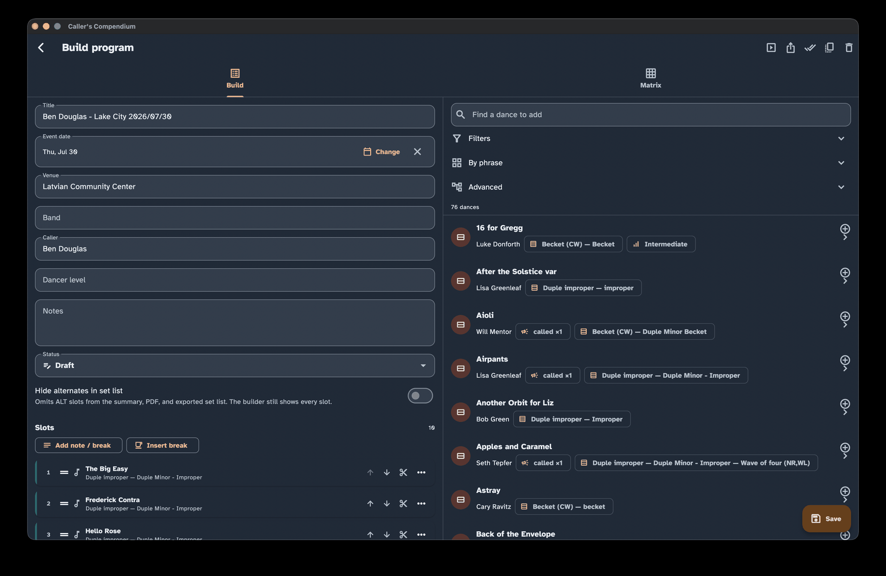
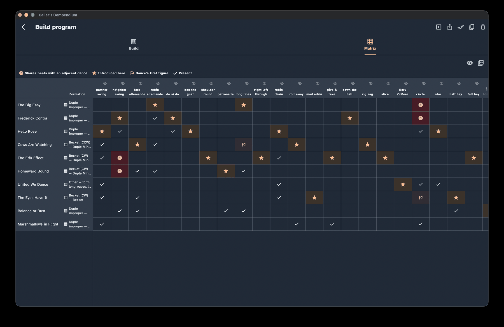

Programs & matrix
A program is an ordered set list for one event — Saturday's dance, a weekend, a one-off gig. This guide shows you how to build a program from your dances, check the variety of your evening at a glance with the matrix, print or share it, and keep track of what you have called.
Finding your way around these words. On-screen buttons and screens are written in bold — like Programs, New program, and Matrix. The first time a dance term appears it links to the Glossary, so you can get a plain-language definition without losing your place.
New to the app? The Getting started guide gives you the lay of the land first. To fill your library before you build a program, see Collection & search.
Create and manage programs
Open Programs to see the programs you have built. It starts with a short prompt and a New program button until you make your first one.
Each program in the list shows its title, event date, venue, slot count, and a status label (Draft, Finalized, or Performed). The slot count is the number of dances the evening is planned for, so alternates and breaks are not counted. Use the sort button to order the list by Title, Recently updated, or Event date, and the arrow beside it to flip the direction.
- Start one with New program. If you have set up a Starting program template in Settings › Defaults, the new program begins with the template's dances and notes in order (any dance you have since deleted is left out). The template applies only here — not to imported or duplicated programs, or to Create a new program with this dance.
- Import one from the Import program menu (the import icon in the Programs toolbar), which offers two sources — From title list (paste a set list you already have) and From ContraDB (pull an event straight from the online archive). On a narrow screen, these sit in the More actions menu as Import from title list and Import from ContraDB. Both are described below.
- Sync with your other devices from the Sync now icon in the Programs toolbar. It appears only while Device Sync is on and a store is connected, and shows a spinner while a sync is running.
- Duplicate a program from its row's … menu to reuse last month's shape as a starting point.
- Delete a program from the same menu, or by swiping its row. An Undo option appears, and the program moves to Recently deleted, where you can restore it later, exactly as with dances.
Build from a list of titles
Already have your set list written out somewhere — a text file, an email, a note on your phone? From title list (or Import from title list on a narrow screen) lets you paste it in and turn it into a program in one go. Give the program a title, paste your dance titles one per line, and you get a live preview before anything is saved:
- A line that matches a dance in your collection (ignoring capitalisation) becomes a dance slot linked to that dance.
- A line that matches nothing — or that matches more than one dance, so the app can't tell which you meant — is kept as a free-text note slot, the same kind of slot used for breaks and announcements. Nothing is dropped, and the order you pasted is preserved exactly.
- Blank lines are skipped, so you can space your list out however you like.
Press Import to create the program; an Undo option appears in case you change your mind. You can then open the program and tidy up any notes — for example, searching your collection to link a dance the paste couldn't find, or using a note slot's … menu to create a new dance from it directly (see "Kinds of slots" below).
Fill the gaps online. If some lines didn't match anything in your collection, the preview shows a Resolve unmatched online button. It looks each unmatched title up in The Caller's Box, then tries ContraDB for any title the Box couldn't settle. Where a source has exactly one dance with that title, the app imports it and links the slot to it — so a paste can pull in dances you don't own yet, not just the ones you already have. When several dances share the exact title, a review screen lets you pick the one you meant instead of guessing. It needs an internet connection, and anything it still can't place stays a note for you to sort out by hand.
You can paste up to 100 titles at a time.
Import a program from ContraDB
You can also build a program from an event on ContraDB. Choose From ContraDB (or Import from ContraDB on a narrow screen) in the Import program menu; the screen offers two ways to find the event, and both end in the same preview-before-you-keep flow:
- Paste URL — paste a
contradb.com/programs/Nlink (or just its number) and choose Fetch program. - Search by name — type part of a program's name and pick it from the results.
When you search, the app marks programs you've likely already brought in, so repeat imports are easy to spot:
- Imported — you have imported this exact ContraDB program before. Hover or long-press for the date it was imported.
- Possibly imported — one of your programs has the same title, but nothing ties it to this ContraDB event (for example, you built it by hand).
Each marker shows an icon and a label — never colour alone — and the same hint appears at the top of the preview once you open a program. It's only a hint: re-importing is always allowed if you want a fresh copy.
Either way, the app reads the event's running order and lays it out as a program: each dance ContraDB lists is matched to your collection or imported for you, and anything it can't place is kept as a note, in the exact order of the event. Review the preview, then choose Import — with the same Undo safety net as every other import. This needs an internet connection.
Build a program
On a wide screen — a desktop or a tablet in landscape — the builder shows two panes side by side that work together. On a narrower screen, such as a phone, the same pieces are still there: your program fills the screen and the collection picker opens as a panel when you go to add a dance.
The Programs builder with ordered program slots beside a searchable collection picker.

- Your program — the ordered list of slots that make up the evening.
- The collection picker — the same search tools you know from Collection & search: the Filters panel, the Advanced figure builder, and the By phrase panel. Find a dance and add it to the program.
Add note / waltz adds a free-text slot, and Insert break adds a break. On a narrow screen, Add dance opens the collection picker.
To bring in a dance you don't have yet, open the picker's Advanced panel and turn on Online search to search The Caller's Box or ContraDB. Selecting a result imports it and adds it straight away. If the dance is already in your collection, the app uses your copy without asking. If it matches one of your dances but the source or figures differ, the app asks how to handle it before adding it — see Avoiding duplicates.
To look at a dance without adding it, use View details on a picker result or on a dance slot — a read-only preview that stays open until you close it and never changes the program or the dance. On a wide screen you can also press and hold a result to show its details in the program pane, or hold a dance slot to show its details in the picker pane; letting go puts the pane back. On a narrow screen, details open on top of the picker, so your search is still there when you close them.
Kinds of slots
A program is made of three kinds of slots:
- Dance slots — dances pulled from your collection.
- Free-text slots — for the things between dances: a break, a waltz, announcements. A slot that reads Break (which is what Insert break adds) divides the evening into sections — see the matrix below.
- Alts — an alternate dance you might call instead of the one above it. Choose Mark as alternate from a slot's … menu (and Make primary to undo it). An alt appears indented under its primary and is marked with an icon and text (never color alone), so it is always clear which dance is the backup.
Edit a slot
Choose Edit slot from a slot's … menu to give it a note, a guest caller, and optional walkthrough and dance lengths in minutes. The lengths help you pace the evening and feed the timing display in Perform mode, which shows them separately and uses their total for the overrun cue.
The same dialog has a Replace… button:
- On a dance slot, it swaps in a different dance and keeps everything else — note, guest caller, lengths, and performed mark — so you don't have to add the new dance, drag it into place, and delete the old one.
- On a note slot (other than a break), it imports or selects a dance and puts it in the slot in place of the note, keeping the timing details.
A note slot with text in it also offers Create a dance from this on its … menu. It opens the dance editor with that text as the title, and saving links the slot to the new dance in one step — handy for a note left behind by an import that couldn't find a match.
Reorder and remove slots
To reorder slots, use the drag handle or the move up / move down buttons. Both do the same job, so you are never forced to drag.
To remove a slot, choose the scissors button on its row (its tooltip reads Cut and the slot's name). The slot is removed immediately, the slots after it move up, and the removal is announced to screen readers. Removing a slot from a program never deletes the dance from your collection.
Event details
A program carries the details of its event:
- Event date, Venue, and Notes;
- program-level Band, Caller, and Dancer level;
- a Status — Draft, Finalized, or Performed — shown on the Programs list;
- Hide alternates in set list, which leaves alternates out of the summary, the PDF, and exported set lists while the builder still shows every slot; and
- Perform dialect, the dialect Perform mode uses for this program. Leave it on Use app dialect to follow your active dialect. It affects Perform only: the editor, the summary, the PDF, and exports keep your active dialect.
The venue can be a simple free-text label, or — when you turn on Use reusable venue records in Settings › Program › Venues — a saved venue record you can reuse across programs, with its own address, contacts, and schedule that you edit in one place. A program linked to a saved venue shows and exports that record's details; otherwise the free-text label is used. Switching modes never loses what you typed.
If you often play the same role, set a default caller or band in Settings › Defaults and new programs will prefill them. You can always change these per program.
Check your evening with the matrix
The Matrix tab turns your program into a grid worked out from the choreography, so you can see the shape of the evening at a glance.
Breaks divide the grid into numbered sections. Dances before the first break are in the 1st section, dances between breaks are in the 2nd, 3rd, and later sections, and the breaks themselves are unnumbered. These numbers appear only in the matrix; calling-history summaries count the 2nd and later sections together as the second half.
The program matrix with moves as columns, dances as rows, pinned headers, and markers that explain how figures are introduced and reused.

Here is how to read it:
Dances are rows; moves are columns.
A pinned Formation column next to each dance title shows its formation (Improper, Becket, triple minor, and so on), so you can spot too many non-improper formations stacking up in a row without losing your place while scrolling through moves.
Four cell markers say what is happening at each intersection. Each is an icon with a label, and the matrix carries a legend:
Marker Label Meaning Star Introduced here The first dance (top to bottom) whose choreography uses that move, wherever it falls in that dance Flag Dance's first figure The move that dance opens with Check Present The move appears in that dance Alert Shares beats with an adjacent dance (or Same phrase as adjacent dance, if you turn the setting below off) See below The alert marker replaces the check when a move's beats actually overlap in two dances that run back-to-back in the program — for example a partner balance & swing that lands on the exact same beats in one dance and again in the very next dance. Adjacent repeats like this can make two dances feel samey on the floor, so the matrix flags them for you to notice and, if you like, reconsider. Only the two colliding cells are flagged; a repeat that is not in neighbouring dances, or whose beats don't actually overlap, is left alone.
An alternate and its primary are two choices for the same spot in the program, so they are never compared with each other. Instead, the primary and each of its alternates are checked against the dances on either side (including their alternates) — whichever one you end up calling could follow the previous dance or lead into the next. This holds even while alternate rows are hidden, so a cell can be flagged because of an alternate you cannot currently see.
To flag any repeat that lands in the same named phrase (A1, A2, B1, B2…), even when the beats themselves don't overlap, turn off Flag exact beat overlap only in Settings › Program.
Show phrase labels with the text-fields icon above the matrix. This replaces the markers with every phrase where that move starts, in order (A1, A2, B1, B2…). Compound columns and the column for free-text figures keep their markers. It is a screen-only view: it stays on while you switch between Matrix and Build or resize the window, resets when you close the program, and does not change the PDF.
Headers stay pinned as you scroll, so you never lose track of which row or column you are looking at.
Hide a column you do not need using the eye icon in its header. The icon is always there rather than appearing on hover, so it works by touch, mouse, or keyboard alike. Hiding is a view preference for right now: hidden columns come back the next time you open the program, and they never change what prints or exports. To restore them all at once, use Show all columns above the matrix, beside the PDF button — it is available only while something is hidden. The pinned Formation column cannot be hidden, since it is part of each dance's identity rather than a move.
Hide alternate rows with the alternate-route icon above the matrix. This is a view-only filter: it stays on while you switch tabs or resize the window, resets when you close the program, and does not change the saved program, the alert markers, or anything you print or export. It is separate from the program's Hide alternates in set list option, which is saved and controls set-list output.
Reorder, rename, or remove columns for good in Settings › Program › Matrix columns. Unlike the eye icon above, changes there are saved and apply to every program, on screen and in the printed PDF: drag a column to a new position, give it a name that suits your callers, or remove one you never use. Removed columns can be brought back at any time, and two reset controls restore the built-in columns or wipe every customisation. The Programs settings have the full walkthrough.
The matrix shows presence, not counts — whether a move is in a dance, not how many times, and not the order the moves come in. That is exactly what you want for spotting patterns across the evening: scan a move's column and you can see at a glance that, say, several dances in a row all have a swing, or that one move turns up in nearly every dance. To make the grid meaningful, swings, allemandes, and chains are split out by role (partner/neighbor/larks/robins/…); swings are further split by whether they carry a "balance and" or "meltdown" lead-in, and heys are split by their length — so similar-looking moves are not lumped together. The plain partner swing and neighbor swing columns are always shown, even when empty, so an evening without one stands out; other columns appear only when some dance uses that move.
A few practical notes:
- On a narrow phone screen, the matrix falls back to a compact layout that still conveys the same information.
- For screen-reader users, the matrix reads as a proper table, so you can navigate it row by row and column by column.
- To take it with you, use Export or print matrix as PDF in the Matrix tab. This is the matrix's own control, separate from the program's Export menu, and it is unavailable while the matrix is empty. The PDF is landscape and carries its own legend — where the screen uses icons, the printed page uses the marks
★(introduced here),▸(dance's first figure),✓(present), and‼(shares beats with an adjacent dance, or same phrase as adjacent dance if you've turned the setting off). Columns you have hidden on screen still print: the export always covers the full matrix. See Share, print & export.
Parameterized columns
The built-in columns split moves in a fixed way. To track a narrower version of a move — say, only partner swings, or only balance and swings — choose Add parameterized column in Settings › Program › Matrix columns. Pick one move and, optionally, exact values for its details, such as who swings or the lead-in. A figure matches when its details have those values, counting the move's usual defaults for anything the dance doesn't spell out. The column appears only when at least one dance in the program has a matching figure.
A matching figure moves into your column instead of also showing in the built-in one, so every marker — introduced here, first figure, phrase labels, and the alert — refers to your column. If two of your parameterized columns both match, the one with more values set wins; on a tie, the one you added first wins. Values must match exactly: there are no ranges, wildcards, or "this move or that one" choices.
If your parameterized columns catch every plain partner swing (or neighbor swing) in the program, the now-empty built-in column is hidden. If they catch only some, it stays.
Compound columns
To spot a particular run of figures — say, circle left → swing → circle left — choose Add compound column in Settings › Program › Matrix columns and list at least two moves in order, with exact details if you like. The column is marked for a dance only when those figures come back to back, in that order, in the dance as written. A gap or another figure in between means no match, and a run never continues from one dance into the next.
A compound column adds to the matrix rather than taking anything away: the figures in the run still show in their own columns too. It marks presence only, and it never raises the alert marker. You can reorder, rename, remove, edit, or delete compound columns alongside the others, and they appear the same on screen and in the PDF.
Print, export, and email a program
When it is time to hand out or file your set list, open the program's Export menu:
- Share set list (text) — hands a plain-text set list to your system's share sheet, ready to drop into an email or a message.
- Share (program + dances) — writes one file holding the program and every dance it uses, so another caller gets the dances too, not just a list of titles.
- Copy set list — puts the same text on your clipboard.
- Export as JSON file — opens a choice to Save, Copy raw JSON, Share, or Cancel. The file is the same as Share (program + dances), named
.jsonso a device without the app can still open it. Save opens your system's save dialog; cancelling it saves nothing. - Export / print PDF — builds a PDF and opens your system's print dialog.
A set list is titles, event details, and slot notes by default, with each dance's author shown next to its title if you have authors turned on. Settings › Defaults lets you choose other dance fields too, but they only appear on the richer per-dance card, not the numbered set-list line itself — see Choose which dance fields appear. When you share, copy, or export as PDF the app asks "Include figures?" — choose Set list only to keep titles, notes, and the author, or Set list and figures to append a full card for each dance, showing every selected field alongside its figures, after the set list. If none of the program's dances have structured figures, the question is skipped. If your program is linked to a venue with contact people recorded, the PDF, JSON, and Share (program + dances) exports first ask whether to include those contacts, and leave them out unless you say otherwise. A venue's street address is never included in any export.
Share, print & export covers all of this in detail, including what a shared bundle contains and what never leaves your device.
Track what you have called
Every program feeds a dance's calling history. Open any dance from your collection and its detail view lists the programs that include it, most recent first.
There are two ways to think about "called," and a setting lets you choose:
- Any program that contains the dance counts (the default), or
- only slots you marked performed count — turn on Require "mark performed" for calling history in Settings › Program › Calling history.
To mark one slot, choose Mark performed from its … menu, or mark it from Perform mode while you call. To mark every unperformed dance slot at once, use Mark all performed in the program editor or on a saved program's summary; it offers a one-tap Undo.
The same settings section can also limit calling history to programs you called yourself, and control the repeated-venues summary.
Where to go next
- Fill your library first: Collection & search
- Call your program from the stage: Perform mode
- Put your programs in your own words: Dialect
- Hand a set list to someone else: Share, print & export
- Save and move your data: Settings · Backup & portability
Not sure what a word means? The Glossary has plain definitions for every term used across these guides.